Caminho 01 Atendimento
Recebi uma medida protetiva
Intimação, restrições de contato e distância, filhos, casa e as primeiras providências e o que a decisão exige.
Rede de Proteção é a orientação jurídica do advogado Lucas Brito Ladeia. Cada margem deste rio é uma área do Direito.
Lucas Brito Ladeia · OAB/MA 16.091
Ninguém chega aqui por escolha: uma intimação, uma medida protetiva, uma acusação, o fim de um casamento. O que tenho de mais valioso para oferecer é o que dez anos de advocacia me ensinaram, o que a lei diz e os cuidados antes de decidir, reunido para que você entenda em minutos o que a mim custou anos.
Liberdade · Família · Patrimônio
Conteúdo informativo. Não substitui a análise individual de cada caso.
Qual é a sua situação?
Para lerSão 63 textos da Rede, organizados pelo que aconteceu com você: o que fazer, passo a passo, em cada situação. Acesso livre, sem cadastro.
 Posso gravar a conversa sem ela saber?Gravar a conversa de que você participa é diferente de captar a…Gravar a conversa de que você participa é diferente de captar a conversa dos outros. Veja o que a Lei 9.296/1996 permite, o limite que não pode ser cruzado e como preservar a gravação.
Posso gravar a conversa sem ela saber?Gravar a conversa de que você participa é diferente de captar a…Gravar a conversa de que você participa é diferente de captar a conversa dos outros. Veja o que a Lei 9.296/1996 permite, o limite que não pode ser cruzado e como preservar a gravação.  Medida protetiva, intimação ou divórcio: como um homem atravessa a crise e reconstrói a vidaDo peso carregado em silêncio ao recomeço: as três fases de…Do peso carregado em silêncio ao recomeço: as três fases de quem passa por um processo, lidas com Nietzsche, Sêneca e Raul Seixas, e o que fazer em cada uma.
Medida protetiva, intimação ou divórcio: como um homem atravessa a crise e reconstrói a vidaDo peso carregado em silêncio ao recomeço: as três fases de…Do peso carregado em silêncio ao recomeço: as três fases de quem passa por um processo, lidas com Nietzsche, Sêneca e Raul Seixas, e o que fazer em cada uma.  Na Lei Maria da Penha existe acordo, cesta básica ou pena só de multa?Por que a Lei 9.099/1995 não se aplica, o que isso tira do caso…Por que a Lei 9.099/1995 não se aplica, o que isso tira do caso (transação penal, suspensão condicional e acordo de não persecução) e o que a lei proíbe na pena: cesta básica e multa isolada.
Na Lei Maria da Penha existe acordo, cesta básica ou pena só de multa?Por que a Lei 9.099/1995 não se aplica, o que isso tira do caso…Por que a Lei 9.099/1995 não se aplica, o que isso tira do caso (transação penal, suspensão condicional e acordo de não persecução) e o que a lei proíbe na pena: cesta básica e multa isolada.  Nunca moramos juntos. A Lei Maria da Penha se aplica?O art…O art. 5º, III, da Lei Maria da Penha e a Súmula 600 do STJ dispensam a coabitação. Veja o que continua em discussão no processo e o que muda quando a lei se aplica.
Nunca moramos juntos. A Lei Maria da Penha se aplica?O art…O art. 5º, III, da Lei Maria da Penha e a Súmula 600 do STJ dispensam a coabitação. Veja o que continua em discussão no processo e o que muda quando a lei se aplica.  Ela me mandou mensagem ou pediu para alguém falar comigo. Isso descumpre a medida protetiva?Receber um recado dela, ou de alguém a pedido dela, não revoga a…Receber um recado dela, ou de alguém a pedido dela, não revoga a medida protetiva. Veja o que a lei e o STJ dizem sobre o contato iniciado pela pessoa protegida, o recado por terceiro, o que não fazer e quando pedir a revisão.
Ela me mandou mensagem ou pediu para alguém falar comigo. Isso descumpre a medida protetiva?Receber um recado dela, ou de alguém a pedido dela, não revoga a…Receber um recado dela, ou de alguém a pedido dela, não revoga a medida protetiva. Veja o que a lei e o STJ dizem sobre o contato iniciado pela pessoa protegida, o recado por terceiro, o que não fazer e quando pedir a revisão.  O que acontece se a pessoa que pediu a medida desistir? Dá para retirar na delegacia?Só o juiz revoga a medida protetiva…Só o juiz revoga a medida protetiva. Entenda a diferença entre a medida e o processo criminal, a retratação da representação, por que a reconciliação não encerra a medida e o que nunca fazer.
O que acontece se a pessoa que pediu a medida desistir? Dá para retirar na delegacia?Só o juiz revoga a medida protetiva…Só o juiz revoga a medida protetiva. Entenda a diferença entre a medida e o processo criminal, a retratação da representação, por que a reconciliação não encerra a medida e o que nunca fazer.  Como preservar conversas, áudios e arquivos e documentar ameaças sem comprometer a autenticidade?Guardar o original e o contexto faz diferença…Guardar o original e o contexto faz diferença. Veja como exportar conversas, manter arquivos intactos, registrar episódios com datas, guardar cópias em lugar seguro e o que nunca fazer.
Como preservar conversas, áudios e arquivos e documentar ameaças sem comprometer a autenticidade?Guardar o original e o contexto faz diferença…Guardar o original e o contexto faz diferença. Veja como exportar conversas, manter arquivos intactos, registrar episódios com datas, guardar cópias em lugar seguro e o que nunca fazer.  Fui ameaçada hoje: como pedir uma medida protetiva e em quanto tempo o juiz decide?Onde pedir, sem advogado e sem boletim de ocorrência como condição,…Onde pedir, sem advogado e sem boletim de ocorrência como condição, o que levar, o que pode ser pedido e os prazos de 48 horas previstos na Lei Maria da Penha.
Fui ameaçada hoje: como pedir uma medida protetiva e em quanto tempo o juiz decide?Onde pedir, sem advogado e sem boletim de ocorrência como condição,…Onde pedir, sem advogado e sem boletim de ocorrência como condição, o que levar, o que pode ser pedido e os prazos de 48 horas previstos na Lei Maria da Penha.  Ele descumpriu a medida protetiva: e agora?Do ponto de vista de quem pediu a proteção: o que conta como…Do ponto de vista de quem pediu a proteção: o que conta como descumprimento, como registrar sem perder a prova e o que o juiz pode determinar, da ampliação das medidas à monitoração eletrônica.
Ele descumpriu a medida protetiva: e agora?Do ponto de vista de quem pediu a proteção: o que conta como…Do ponto de vista de quem pediu a proteção: o que conta como descumprimento, como registrar sem perder a prova e o que o juiz pode determinar, da ampliação das medidas à monitoração eletrônica. 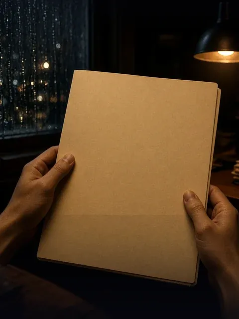
Como pedir a revogação ou a revisão de uma medida protetiva? O que precisa ser demonstrado?A medida vale enquanto houver risco…A medida vale enquanto houver risco. O pedido de revogação ou de ajuste parcial gira em torno disso: o que mudou, como provar e o que nunca fazer enquanto o juiz não decide.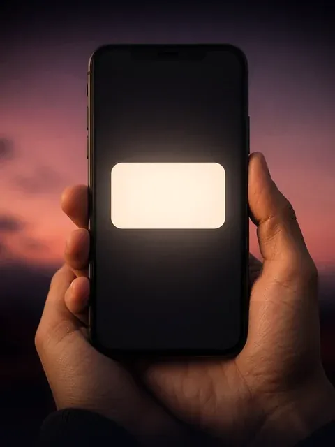
Descumpri a medida protetiva. O que pode acontecer?E se foi ela quem procurou o contato…O que diz o art. 24-A da Lei Maria da Penha, o que acontece quando a própria pessoa protegida procura o contato e quais cuidados práticos fazem diferença depois de um descumprimento. Recebi uma medida protetiva. O que faço nas primeiras 48 horas?E se a outra pessoa mandar mensagem primeiro…Contato, armas, descumprimento, filhos, prazo e antecedentes: as perguntas de quem acabou de ser intimado.
Recebi uma medida protetiva. O que faço nas primeiras 48 horas?E se a outra pessoa mandar mensagem primeiro…Contato, armas, descumprimento, filhos, prazo e antecedentes: as perguntas de quem acabou de ser intimado.  A medida protetiva vai aparecer no meu concurso ou emprego?O que aparece na certidão, e o que não…O que a medida protetiva registra, o que aparece numa certidão de antecedentes e como ela pode repercutir em concurso, emprego e viagem.
A medida protetiva vai aparecer no meu concurso ou emprego?O que aparece na certidão, e o que não…O que a medida protetiva registra, o que aparece numa certidão de antecedentes e como ela pode repercutir em concurso, emprego e viagem. 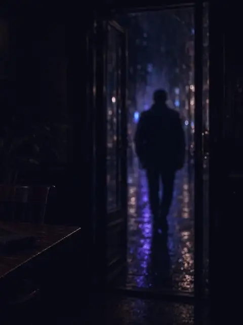
Ela chegou onde eu estava. Tenho que ir embora?O que acontece se você ficar no local…Chegar primeiro não protege ninguém. O que conta é o que você faz depois de perceber a presença dela.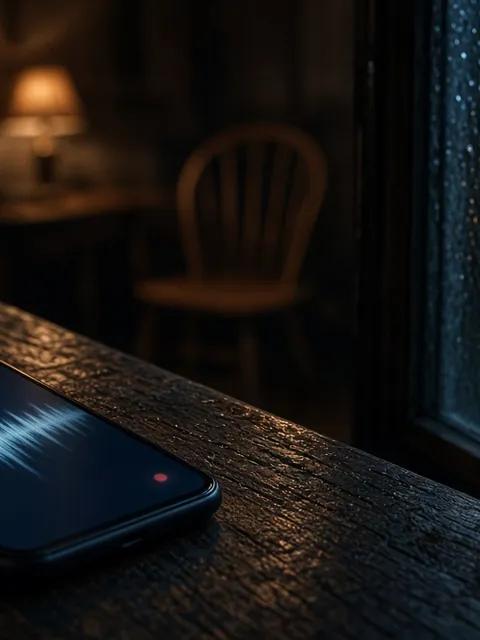
Gravar o ambiente no próprio celular. Isso vale como prova?A licitude não resolve, sozinha, o valor da gravação…A licitude não resolve, sozinha, o valor da gravação. O que pesa é o arquivo original, inteiro, e o cuidado de não se aproximar de quem está protegido.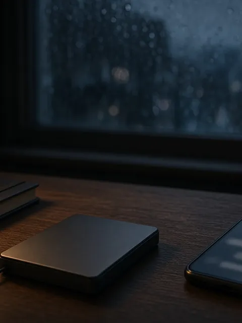
A mensagem apagou no meu celular. Dá para recuperar antes que suma de vez?Quando uma mensagem é apagada, ela raramente some de um único lugar…Quando uma mensagem é apagada, ela raramente some de um único lugar ao mesmo tempo. O risco é mexer no celular e sobrescrever o que ainda existia. Por que o print solto pesa pouco e o arquivo íntegro pesa muitoUma captura de tela isolada pode ser montada em minutos. O que pesa é…Uma captura de tela isolada pode ser montada em minutos. O que pesa é o arquivo íntegro, a conferência de integridade e, quando for o caso, o registro do tabelião.
Por que o print solto pesa pouco e o arquivo íntegro pesa muitoUma captura de tela isolada pode ser montada em minutos. O que pesa é…Uma captura de tela isolada pode ser montada em minutos. O que pesa é o arquivo íntegro, a conferência de integridade e, quando for o caso, o registro do tabelião.  Preservar tudo: por que apagar ou editar piora qualquer cenárioApagar ou editar uma conversa não apaga a outra ponta e pode criar um…Apagar ou editar uma conversa não apaga a outra ponta e pode criar um problema novo: a lacuna, o risco de fraude processual e a perda de credibilidade.
Preservar tudo: por que apagar ou editar piora qualquer cenárioApagar ou editar uma conversa não apaga a outra ponta e pode criar um…Apagar ou editar uma conversa não apaga a outra ponta e pode criar um problema novo: a lacuna, o risco de fraude processual e a perda de credibilidade.  Pensar de trás para frente: da sentença que o juiz vai escrever à prova que você guarda hojeA sentença precisa de prova que se possa conferir. Pensar no que o…A sentença precisa de prova que se possa conferir. Pensar no que o juiz terá de escrever ajuda a decidir o que guardar agora, e o que pedir que um provedor preserve a tempo.
Pensar de trás para frente: da sentença que o juiz vai escrever à prova que você guarda hojeA sentença precisa de prova que se possa conferir. Pensar no que o…A sentença precisa de prova que se possa conferir. Pensar no que o juiz terá de escrever ajuda a decidir o que guardar agora, e o que pedir que um provedor preserve a tempo.  Como recuperar um celular, computador ou documento apreendido em uma investigação?Objetos apreendidos voltam quando deixam de interessar ao processo…Objetos apreendidos voltam quando deixam de interessar ao processo. Veja como pedir a restituição, o que não é devolvido, o que acontece com bens que se deterioram e o prazo depois do fim do processo.
Como recuperar um celular, computador ou documento apreendido em uma investigação?Objetos apreendidos voltam quando deixam de interessar ao processo…Objetos apreendidos voltam quando deixam de interessar ao processo. Veja como pedir a restituição, o que não é devolvido, o que acontece com bens que se deterioram e o prazo depois do fim do processo.  Posso ser preso preventivamente mesmo sem ter sido condenado?A preventiva não é pena antecipada…A preventiva não é pena antecipada. Entenda os fundamentos e as hipóteses da lei, a exigência de fatos concretos, as medidas alternativas, a revisão a cada 90 dias e como questionar a prisão.
Posso ser preso preventivamente mesmo sem ter sido condenado?A preventiva não é pena antecipada…A preventiva não é pena antecipada. Entenda os fundamentos e as hipóteses da lei, a exigência de fatos concretos, as medidas alternativas, a revisão a cada 90 dias e como questionar a prisão. 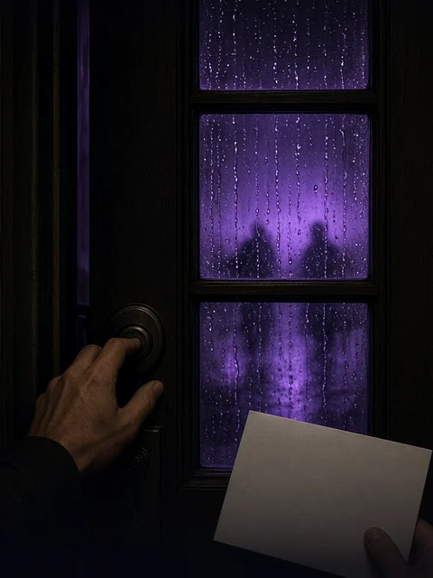
Recebi um mandado de busca e apreensão. O que a polícia pode fazer dentro da minha casa?Com mandado, a polícia pode entrar de dia e apreender o que se…Com mandado, a polícia pode entrar de dia e apreender o que se relaciona ao fato. Veja o que o mandado deve conter, como a busca deve ser feita, seus direitos durante a diligência e o que evitar. A polícia levou meu celular durante uma busca. Pode acessar todas as minhas conversas?Apreender o aparelho e acessar o conteúdo são coisas diferentes…Apreender o aparelho e acessar o conteúdo são coisas diferentes. Entenda a ordem judicial, a perícia e a cadeia de custódia, a questão da senha e o que a defesa pode pedir.
A polícia levou meu celular durante uma busca. Pode acessar todas as minhas conversas?Apreender o aparelho e acessar o conteúdo são coisas diferentes…Apreender o aparelho e acessar o conteúdo são coisas diferentes. Entenda a ordem judicial, a perícia e a cadeia de custódia, a questão da senha e o que a defesa pode pedir.  Como demonstrar que uma conversa de WhatsApp foi apresentada fora de contexto?Um print mostra só um recorte…Um print mostra só um recorte. Veja como preservar a conversa original, exportar o histórico, usar ata notarial ou perícia e impugnar o trecho de forma específica, sem comprometer a defesa.
Como demonstrar que uma conversa de WhatsApp foi apresentada fora de contexto?Um print mostra só um recorte…Um print mostra só um recorte. Veja como preservar a conversa original, exportar o histórico, usar ata notarial ou perícia e impugnar o trecho de forma específica, sem comprometer a defesa.  Como consultar um inquérito policial e descobrir o que já existe contra mim?A defesa tem direito de examinar e copiar os elementos já…A defesa tem direito de examinar e copiar os elementos já documentados na investigação. Veja onde o inquérito fica, o que pode ser consultado, o que pode ficar em sigilo e o que fazer depois.
Como consultar um inquérito policial e descobrir o que já existe contra mim?A defesa tem direito de examinar e copiar os elementos já…A defesa tem direito de examinar e copiar os elementos já documentados na investigação. Veja onde o inquérito fica, o que pode ser consultado, o que pode ficar em sigilo e o que fazer depois.  Recebi uma citação criminal. O que acontece agora e qual é o prazo para a defesa?A citação chama a pessoa acusada a se defender em um processo que já…A citação chama a pessoa acusada a se defender em um processo que já começou. Entenda a diferença para a intimação, o prazo de 10 dias da resposta à acusação e o que vem depois.
Recebi uma citação criminal. O que acontece agora e qual é o prazo para a defesa?A citação chama a pessoa acusada a se defender em um processo que já…A citação chama a pessoa acusada a se defender em um processo que já começou. Entenda a diferença para a intimação, o prazo de 10 dias da resposta à acusação e o que vem depois.  Guarda e convivência: a reputação que cada mensagem constróiPai e mãe separados vão se encontrar muitas vezes, e cada mensagem…Pai e mãe separados vão se encontrar muitas vezes, e cada mensagem fica registrada. A resposta à provocação, principalmente quando há medida protetiva, pode pesar mais do que a provocação.
Guarda e convivência: a reputação que cada mensagem constróiPai e mãe separados vão se encontrar muitas vezes, e cada mensagem…Pai e mãe separados vão se encontrar muitas vezes, e cada mensagem fica registrada. A resposta à provocação, principalmente quando há medida protetiva, pode pesar mais do que a provocação.  Moro no exterior e preciso resolver um problema jurídico no Brasil. Preciso voltar?Nem sempre é preciso voltar ao Brasil para começar ou acompanhar um processo…Nem sempre é preciso voltar ao Brasil para começar ou acompanhar um processo. Veja o que a procuração permite, o que o juiz brasileiro pode decidir mesmo com você longe e quando o comparecimento pessoal pode ser exigido.
Moro no exterior e preciso resolver um problema jurídico no Brasil. Preciso voltar?Nem sempre é preciso voltar ao Brasil para começar ou acompanhar um processo…Nem sempre é preciso voltar ao Brasil para começar ou acompanhar um processo. Veja o que a procuração permite, o que o juiz brasileiro pode decidir mesmo com você longe e quando o comparecimento pessoal pode ser exigido. 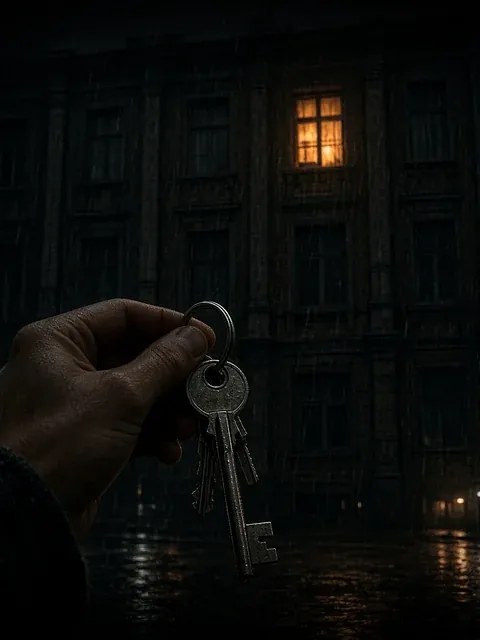
Meu ex ficou com a casa depois da separação. Posso pedir aluguel pelo uso exclusivo?Quem usa sozinho um imóvel comum pode ter de compensar o outro…Quem usa sozinho um imóvel comum pode ter de compensar o outro. Veja quando cabe, o que pesa na análise, como ficam filhos e despesas e os caminhos de acordo, notificação, ação e venda do imóvel. Terminamos a união estável sem contrato nem documentos. O que acontece com o patrimônio?União estável não depende de papel…União estável não depende de papel. Sem contrato, vale a comunhão parcial. Veja o que caracteriza a união, como provar sem documentos, o que entra na partilha e os caminhos em cartório e na Justiça.
Terminamos a união estável sem contrato nem documentos. O que acontece com o patrimônio?União estável não depende de papel…União estável não depende de papel. Sem contrato, vale a comunhão parcial. Veja o que caracteriza a união, como provar sem documentos, o que entra na partilha e os caminhos em cartório e na Justiça.  Casei em comunhão parcial de bens. O que efetivamente entra na partilha?Entra o que foi adquirido durante o casamento, mesmo no nome de um só…Entra o que foi adquirido durante o casamento, mesmo no nome de um só. Ficam fora bens anteriores, heranças e doações. Veja benfeitorias, dívidas, a data do fim da comunhão e como se preparar.
Casei em comunhão parcial de bens. O que efetivamente entra na partilha?Entra o que foi adquirido durante o casamento, mesmo no nome de um só…Entra o que foi adquirido durante o casamento, mesmo no nome de um só. Ficam fora bens anteriores, heranças e doações. Veja benfeitorias, dívidas, a data do fim da comunhão e como se preparar. 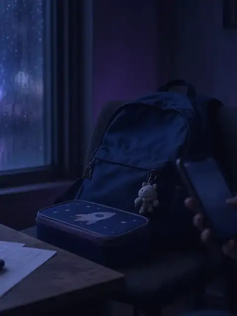
Ele não paga a pensão dos filhos. Como exigir na Justiça?Sem valor fixado, o caminho é a ação de alimentos…Sem valor fixado, o caminho é a ação de alimentos. Com decisão ou acordo, pede-se o cumprimento: rito da prisão, penhora, desconto em folha e protesto. Veja também prescrição e o que evitar.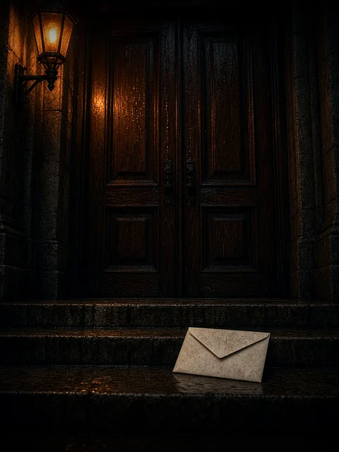
Atrasei a pensão: posso ser preso? Em quantos dias?O atraso da pensão pode levar à prisão civil, mas ela não é…O atraso da pensão pode levar à prisão civil, mas ela não é automática: depende de execução pelo rito da prisão, de intimação ou citação e do prazo de 3 dias para pagar, provar que pagou ou justificar. A guarda é compartilhada. Ainda preciso pagar pensão?Compartilhada não quer dizer metade…Guarda compartilhada não é metade para cada um e não elimina a pensão. Entenda como as despesas do filho se dividem.
A guarda é compartilhada. Ainda preciso pagar pensão?Compartilhada não quer dizer metade…Guarda compartilhada não é metade para cada um e não elimina a pensão. Entenda como as despesas do filho se dividem.  Tive que sair de casa. Perco a guarda ou o imóvel?A casa continua sendo sua enquanto…O afastamento do lar é provisório. Veja o que acontece com o imóvel, a guarda, as visitas e a pensão.
Tive que sair de casa. Perco a guarda ou o imóvel?A casa continua sendo sua enquanto…O afastamento do lar é provisório. Veja o que acontece com o imóvel, a guarda, as visitas e a pensão.  Perdi o emprego. Como fica a pensão que eu pago?A pensão não para sozinha quando…A obrigação não para sozinha quando o emprego acaba. O caminho é pedir a revisão ao juiz logo e pagar o que for possível enquanto isso.
Perdi o emprego. Como fica a pensão que eu pago?A pensão não para sozinha quando…A obrigação não para sozinha quando o emprego acaba. O caminho é pedir a revisão ao juiz logo e pagar o que for possível enquanto isso.  Meu CR venceu ou foi negado: o que acontece com as armas?O CR do CAC vale três anos…O CR do CAC vale três anos. Se a revalidação é pedida no prazo, o registro segue válido até a decisão. Se vence ou é negado, veja os prazos de cancelamento e de destinação das armas na IN DG/PF 311/2025 e no Decreto 11.615/2023.
Meu CR venceu ou foi negado: o que acontece com as armas?O CR do CAC vale três anos…O CR do CAC vale três anos. Se a revalidação é pedida no prazo, o registro segue válido até a decisão. Se vence ou é negado, veja os prazos de cancelamento e de destinação das armas na IN DG/PF 311/2025 e no Decreto 11.615/2023.  Fui abordado transportando arma: guia de tráfego, porte de trânsito e o que pode virar crimeA guia de tráfego comprova o porte de trânsito, não o porte de defesa…A guia de tráfego comprova o porte de trânsito, não o porte de defesa. Veja o que ela autoriza, como a arma deve ir acondicionada e o que a Lei 10.826/2003 diz quando o transporte foge da autorização.
Fui abordado transportando arma: guia de tráfego, porte de trânsito e o que pode virar crimeA guia de tráfego comprova o porte de trânsito, não o porte de defesa…A guia de tráfego comprova o porte de trânsito, não o porte de defesa. Veja o que ela autoriza, como a arma deve ir acondicionada e o que a Lei 10.826/2003 diz quando o transporte foge da autorização. 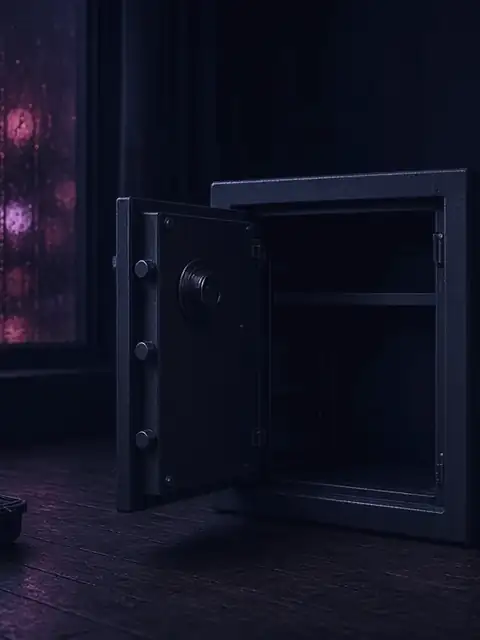
Minha arma foi furtada, roubada ou extraviada: o que comunicar e em quanto tempo?Furto, roubo ou extravio de arma, acessório ou munição do acervo…Furto, roubo ou extravio de arma, acessório ou munição do acervo deve ser comunicado imediatamente no Sinarm-CAC, com envio do boletim à Polícia Federal em até dez dias úteis, conforme a IN DG/PF 311/2025. Mundo em DisputaTaylor Swift e os deepfakes: quando a imagem falsa tem o seu rostoNenhuma foto foi tirada. O dano foi real.Em janeiro de 2024, imagens sexuais falsas da cantora, criadas por inteligência artificial, se espalharam pelo X.
Mundo em DisputaTaylor Swift e os deepfakes: quando a imagem falsa tem o seu rostoNenhuma foto foi tirada. O dano foi real.Em janeiro de 2024, imagens sexuais falsas da cantora, criadas por inteligência artificial, se espalharam pelo X.  Mundo em DisputaBritney Spears: 13 anos sob curatela e a pergunta sobre quem decide pela vida de um adultoTreze anos de curatela. Trinta minutos de audiência.De 2008 a 2021, a cantora não decidiu sozinha sobre o próprio dinheiro, a carreira e partes íntimas da vida.
Mundo em DisputaBritney Spears: 13 anos sob curatela e a pergunta sobre quem decide pela vida de um adultoTreze anos de curatela. Trinta minutos de audiência.De 2008 a 2021, a cantora não decidiu sozinha sobre o próprio dinheiro, a carreira e partes íntimas da vida.  Mundo em DisputaPríncipe Harry contra os tabloides: a caixa postal invadida e o preço da intimidadeQuinze reportagens, uma caixa postal e uma Corte que disse basta.Em dezembro de 2023, a Justiça inglesa concluiu que o grupo do Daily Mirror obteve ilegalmente informações sobre o príncipe Harry em 15 reportagens, com invasão de telefone.
Mundo em DisputaPríncipe Harry contra os tabloides: a caixa postal invadida e o preço da intimidadeQuinze reportagens, uma caixa postal e uma Corte que disse basta.Em dezembro de 2023, a Justiça inglesa concluiu que o grupo do Daily Mirror obteve ilegalmente informações sobre o príncipe Harry em 15 reportagens, com invasão de telefone.  Mundo em DisputaKaren Read: uma busca no celular, dois horários e um júri que absolveuUm celular, dois horários, uma vida em julgamento.Uma busca escrita com erro, “hos long to die in cold”, ocupou o centro de um julgamento por homicídio nos Estados Unidos.
Mundo em DisputaKaren Read: uma busca no celular, dois horários e um júri que absolveuUm celular, dois horários, uma vida em julgamento.Uma busca escrita com erro, “hos long to die in cold”, ocupou o centro de um julgamento por homicídio nos Estados Unidos.  Mundo em DisputaMurdoch: o pai que tentou reescrever a herança irrevogável dos quatro filhosUm patriarca, quatro herdeiros e um papel que dizia irrevogável.Rupert Murdoch quis mudar um fundo familiar irrevogável para deixar só um filho no comando da Fox News.
Mundo em DisputaMurdoch: o pai que tentou reescrever a herança irrevogável dos quatro filhosUm patriarca, quatro herdeiros e um papel que dizia irrevogável.Rupert Murdoch quis mudar um fundo familiar irrevogável para deixar só um filho no comando da Fox News.  Mundo em DisputaDepp x Heard: o mesmo casamento, dois tribunais e dois veredictos opostosUm casamento. Dois países. Dois veredictos opostos.Em Londres, a Justiça concluiu que um jornal podia chamar Johnny Depp de agressor. Na Virgínia, um júri decidiu que Amber Heard o difamou. Como as regras do processo explicam dois resultados opostos, e o que mudaria no Brasil.
Mundo em DisputaDepp x Heard: o mesmo casamento, dois tribunais e dois veredictos opostosUm casamento. Dois países. Dois veredictos opostos.Em Londres, a Justiça concluiu que um jornal podia chamar Johnny Depp de agressor. Na Virgínia, um júri decidiu que Amber Heard o difamou. Como as regras do processo explicam dois resultados opostos, e o que mudaria no Brasil. Se a questão é o voo, o atraso ou a mala, o caminho é o Guia do Passageiro.
Para ser atendido
Os textos acima ajudam a entender. Aqui estão as frentes em que o advogado atende: cada caminho tem uma página que explica como a conversa acontece. Cada caso é analisado individualmente, sem promessa de resultado.
Ver as três etapas em detalhe Prefere explicar direto? Envie uma mensagem
Caminho 01 Atendimento
Intimação, restrições de contato e distância, filhos, casa e as primeiras providências e o que a decisão exige.

Caminho 02 Atendimento
Defesa técnica, sob sigilo. Intimação para depor, acusação, busca e apreensão ou inquérito aberto: o que significa cada momento e como o atendimento é conduzido.
Caminho 03 Atendimento
O que a Lei Maria da Penha prevê sobre posse e porte, entrega ou apreensão de arma, e como organizar a documentação.
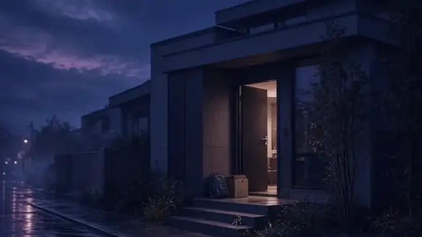
Caminho 04 Atendimento
Separação, união estável, convivência com filhos, pensão alimentícia e divisão de bens, com orientação objetiva.
Material para estudar
Conteúdo editorial, separado do atendimento. Guias em e-book sobre medida protetiva, CAC e Direito de Família, escritos para quem está passando pela situação.
Responsável pela Rede de Proteção
Lucas Brito Ladeia, advogado inscrito na OAB/MA sob o nº 16.091, com atuação desde 2016. Atendimento presencial em Imperatriz-MA e online para pessoas em todo o Brasil.
Cada caso é analisado individualmente, com exposição dos riscos e das possibilidades, sem promessa de resultado.
Ver canais de contatoJornada
Três etapas simples. Cada caso é analisado individualmente; ninguém pode garantir resultado.
Você escolhe a área e envia uma mensagem, ou usa a página do problema. Informe o essencial e se há prazo ou audiência.
O advogado analisa a decisão, os documentos disponíveis e as restrições aplicáveis, e explica o que cada ponto significa na prática.
Indicação das providências possíveis, dos riscos relevantes e da forma de contratação, se houver interesse mútuo em seguir.
Dúvidas frequentes
Contato
Indique a área (medida protetiva, criminal, CAC ou família). A triagem pede só o necessário para a primeira orientação.